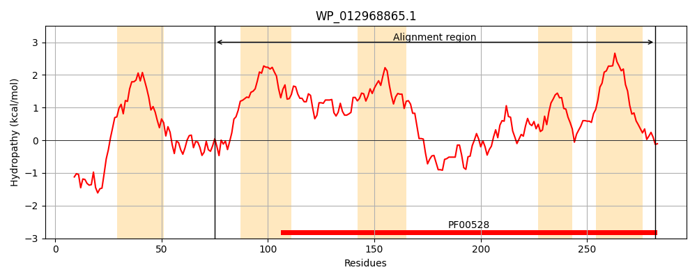
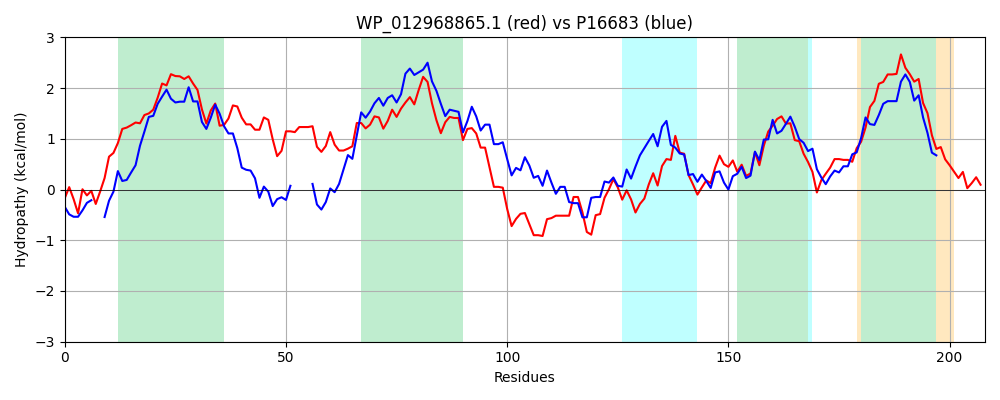

Hit Accession: P16683
Hit TCID: 3.A.1.9.1
Hit Description: gnl|BL_ORD_ID|9231 gnl|TC-DB|P16683|3.A.1.9.1 Phosphonates transport system permease protein phnE - Escherichia coli.
Mach Len: 208
e:0.000000
Query TMS Count : 5
Hit TMS Count: 6
TMS-Overlap Score: 4.150000
Predicted Substrates:CHEBI:34755;iron(3+)
BLAST Alignment:
Score: 361 , Bit scores: 143 bits, E-value: 1.8e-41, Alignment length: 208, Percentage identity: 38
Query: 75 DFWNWPFGYYFTQIGITLAIVFAGTLTATVLALLLSFFAARNIMRGVVLGTLALLMRRLFDVLRGIDMAIWGLIFVRAVGLGPLAGVLAIIMQDTGLLGRLYAEGHEAVDRSPGRGLTAVGANGLQKHRFGIFTQSFPTFLALSLYQIESNTRSAAVLGFVGAGGIGLIYAENMRLWNWDVVMFITLLLVAVVMIMDTLSAWLRRRYI 282
DF W Y T++ +TL I GT A VL++ +A N++ V + RRL D R I+ ++ ++FV AVGLGP AGVLA+ + TG+L +L +E EA++ P G+ A GAN L++ +G+ Q P ++ SLY+ ESN RSA V+G VGAGGIG+ E +R + + + +L++ V ++D LS LR+ +I
Sbjct: 58 DFSQWQD--YLTEMAVTLQIAVWGTALAVVLSIPFGLMSAENLVPWWVYQPV----RRLMDACRAINEMVFAMLFVVAVGLGPFAGVLALFIHTTGVLSKLLSEAVEAIEPGPVEGIRATGANKLEEILYGVLPQVMPLLISYSLYRFESNVRSATVVGMVGAGGIGVTLWEAIRGFQFQQTCALMVLIIVTVSLLDFLSQRLRKHFI 259 | Protein Hydropathy Plots: |
|---|
|  |  |
Pairwise Alignment-Hydropathy Plot:
|
|---|
|  |